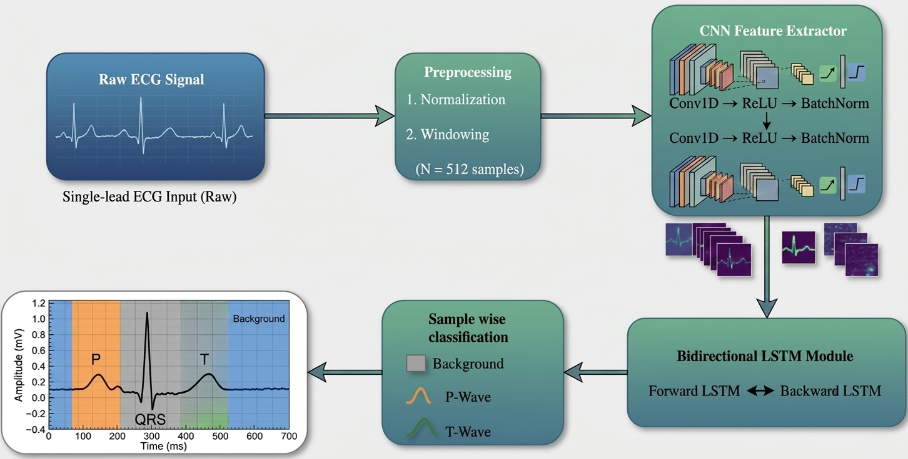
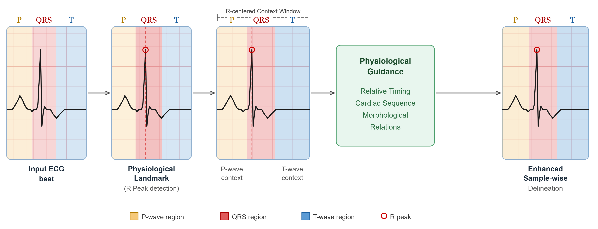
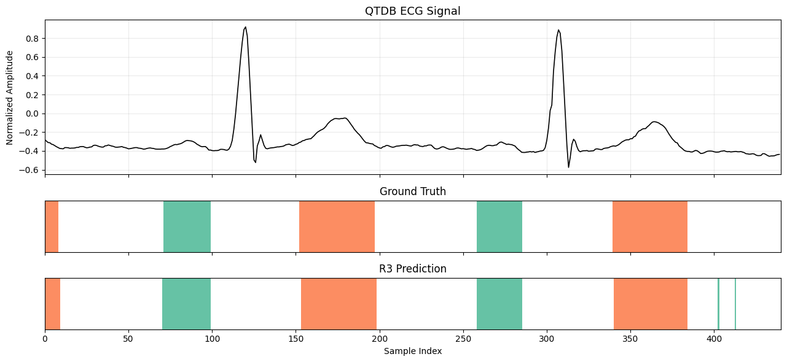
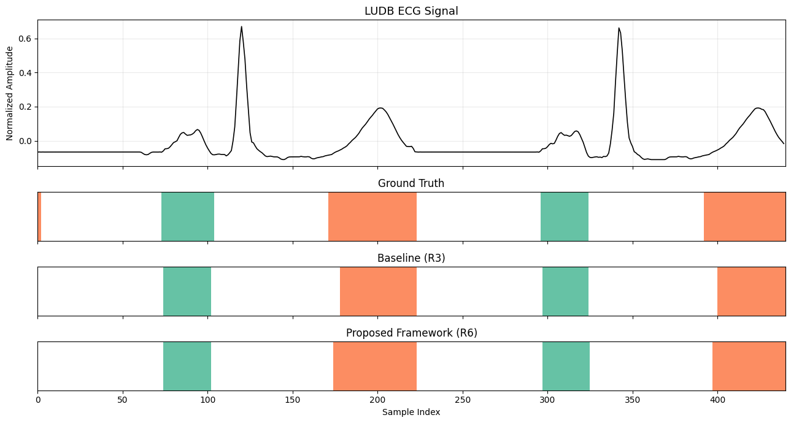

Compiled analytics for the QTDB → LUDB cross-dataset study: dataset composition, the matched A0–A4 ablation, the R1–R6 developmental line, event- and boundary-level delineation accuracy, an independent R-peak audit, and the R-error/downstream-F1 correlation analysis.
Record-level partitions of QTDB (105 records, 250 Hz) and LUDB (200 records, 500→250 Hz). Window counts were generated by actually running the preprocessing pipeline against the raw data.
| Dataset | Partition | Records | Windows (360) | Windows (440) |
|---|---|---|---|---|
| QTDB | Train | 84 | 87,111 | 87,088 |
| QTDB | Validation | 21 | 22,799 | 22,793 |
| LUDB | Adaptation | 20 | 194 | 183 |
| LUDB | Held-out test | 180 | 1,710 | 1,655 |
Sample-wise class composition (360-sample windows):
A two-block 1D CNN (32→64 filters) feeding a bidirectional LSTM (128 hidden units/direction), dropout 0.3, linear classifier over {Background, P, T}. R peaks are detected with Pan–Tompkins and used as the fixed anchor for window construction.


Common protocol: same QTDB split, LUDB adaptation/test partition, preprocessing, and training settings. 15 epochs, seeds 1/2/3, evaluated on the same 180 LUDB test records.
| Config | Description | LUDB Macro F1 |
|---|---|---|
| A0 | Fixed, non-R-centered baseline (stride-256, 360-sample windows) | 0.7999 ± 0.0042 |
| A1 | R-centered representation (PRE=120, POST=240) | 0.8202 ± 0.0009 |
| A2 | A1 + extended post-R context (POST=320) | 0.8308 ± 0.0078 |
| A3 | A2 + normalized temporal-position channel | 0.8263 ± 0.0061 |
| A4 | A3 + supervised adaptation on 20 LUDB records | 0.8415 ± 0.0073 |
Sequential framework evolution, not a controlled ablation — presented as developmental evidence.
| Exp. | Configuration | QTDB F1 | LUDB F1 | LUDB protocol |
|---|---|---|---|---|
| R1 | Cross-entropy baseline | 0.9026 | 0.8203 | 200 records |
| R2 | Weighted focal loss | 0.8420 | 0.7604 | 200 records |
| R3 | Unweighted focal loss (reference baseline) | 0.9061 | 0.8236 | 200 records |
| R4 | Frozen R-aware decoder (failure analysis) | 0.7328 | 0.7119 | 200 records |
| R5 | R audit + R-centered + POST320 | 0.9071 | 0.8266 | 200 records |
| R6 | + temporal channel + LUDB adaptation | 0.9122 | 0.8451 | 20 adapt / 180 test |


Final adapted configuration (A4/R6), one-to-one event matching within 100 ms, on the 180-record LUDB test set.
| Seed | P Sens. | P PPV | P F1 | T Sens. | T PPV | T F1 |
|---|---|---|---|---|---|---|
| 1 | 0.9796 | 0.6575 | 0.7869 | 0.9627 | 0.6530 | 0.7782 |
| 2 | 0.9812 | 0.6464 | 0.7793 | 0.9709 | 0.6316 | 0.7653 |
| 3 | 0.9538 | 0.6352 | 0.7625 | 0.9668 | 0.6486 | 0.7764 |
Onset/offset timing error (ms) for matched events. Positive = later prediction, negative = earlier.
| Wave | Boundary | Seed 1 (ms) | Seed 2 (ms) | Seed 3 (ms) |
|---|---|---|---|---|
| P | Onset | 12.43 | 11.27 | 10.02 |
| P | Offset | 11.08 | 12.79 | 12.69 |
| T | Onset | 23.67 | 25.61 | 23.79 |
| T | Offset | 16.11 | 17.21 | 18.31 |
Pan–Tompkins detector, evaluated against reference R annotations (100 ms tolerance) — independent of downstream P/T performance.
| Dataset | Sensitivity | PPV | F1 | Timing error (ms) |
|---|---|---|---|---|
| QTDB | 0.9780 | 0.9863 | 0.9804 | 13.31 |
| LUDB | 0.9753 | 0.7971 | 0.8800 | 3.07 |
Spearman correlation between R-detector error and downstream P/T performance, n=180 LUDB test records. All correlations are negative.
| R-error measure | vs. P F1 (ρ) | vs. T F1 (ρ) | vs. P/T Macro F1 (ρ) |
|---|---|---|---|
| Total R errors | −0.325** | −0.229** | −0.334*** |
| Missed R rate | −0.319** | −0.150* | −0.304*** |
| False-positive R rate | −0.315** | −0.104 | −0.175* |
| R timing error | −0.117 | −0.078 | −0.166* |
Three LUDB records with complete P-wave failure (F1 = 0) coinciding with severe R-detection error.
| LUDB record | P F1 | T F1 | Total R errors |
|---|---|---|---|
| 90 | 0.0000 | 0.7615 | 18 |
| 93 | 0.0000 | 0.7770 | 16 |
| 74 | 0.0000 | 0.8849 | 15 |
data/splits/*.txtdata/splits/README.mddata/metadata/window_counts.csvdata/metadata/class_frequencies.csvsrc/preprocessing/src/r_peak/pan_tompkins.pysrc/models/cnn_bilstm.pysrc/models/losses.pyconfigs/src/training/adapt.pysrc/analysis/results/